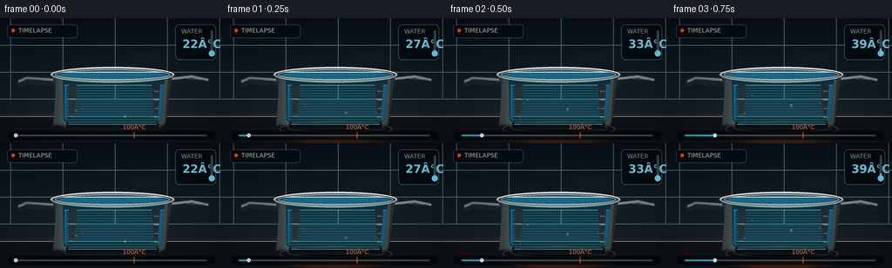
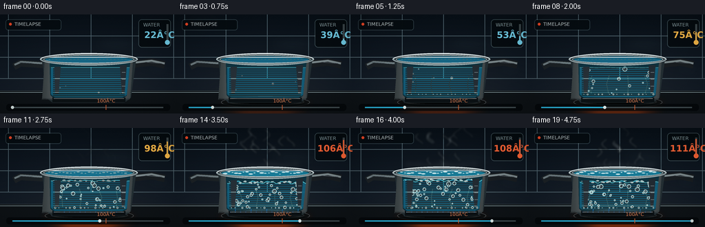

CODING AGENTS AS PIXEL WORLD MODELS
traex/GPT-5.6-Sol · phygen_106
点击播放 · 原生 RGB 像素
逐轮保存的候选
回放视频、检查图与代码变化。
每份候选均可单独播放。实际图片检查记录在下方工具轨迹中。
候选 01播放与检查图
点击播放 · 原生 RGB 像素


展开代码变化
--- 上一保存版本
+++ 本次保存版本
@@ -0,0 +1,288 @@
+from pathlib import Path
+import math
+import numpy as np
+from PIL import Image, ImageDraw, ImageFont, ImageFilter
+import artifact_io
+
+# Deterministic text-to-video renderer for: rapidly heating water in a pot.
+W, H, N = 256, 144, 20
+S = 4
+WW, HH = W*S, H*S
+HERE = Path(__file__).resolve().parent
+rng = np.random.default_rng(106)
+
+try:
+ FONT_S = ImageFont.truetype('/usr/share/fonts/truetype/dejavu/DejaVuSans.ttf', 7*S)
+ FONT_M = ImageFont.truetype('/usr/share/fonts/truetype/dejavu/DejaVuSans.ttf', 10*S)
+ FONT_B = ImageFont.truetype('/usr/share/fonts/truetype/dejavu/DejaVuSans-Bold.ttf', 13*S)
+except OSError:
+ FONT_S = FONT_M = FONT_B = ImageFont.load_default()
+
+def sc(v): return int(round(v*S))
+def box(t): return tuple(sc(v) for v in t)
+def pts(seq): return [(sc(x), sc(y)) for x,y in seq]
+def lerp(a,b,t): return a+(b-a)*t
+def clamp(v,a=0,b=1): return max(a,min(b,v))
+def smooth(a,b,x):
+ q=clamp((x-a)/(b-a))
+ return q*q*(3-2*q)
+
+def add_blurred(base, layer, radius):
+ return Image.alpha_composite(base, layer.filter(ImageFilter.GaussianBlur(sc(radius))))
+
+def ellipse(draw, xy, fill, outline=None, width=1):
+ draw.ellipse(box(xy), fill=fill, outline=outline, width=sc(width))
+def polygon(draw, xy, fill): draw.polygon(pts(xy), fill=fill)
+def line(draw, xy, fill, width=1, joint='curve'):
+ draw.line(pts(xy), fill=fill, width=sc(width), joint=joint)
+
+def make_background():
+ # Deep blue-black tiled kitchen; subtly warm around the stove.
+ yy, xx = np.mgrid[0:HH,0:WW]
+ y = yy/S; x = xx/S
+ warm = np.exp(-(((x-130)/105)**2 + ((y-120)/65)**2))
+ arr = np.zeros((HH,WW,4), np.uint8)
+ arr[...,0] = np.clip(9 + 12*(y/H) + 9*warm,0,255)
+ arr[...,1] = np.clip(17 + 15*(y/H) + 5*warm,0,255)
+ arr[...,2] = np.clip(25 + 20*(y/H) + 1*warm,0,255)
+ arr[...,3] = 255
+ im = Image.fromarray(arr,'RGBA')
+ d = ImageDraw.Draw(im,'RGBA')
+ # backsplash grout and soft reflections
+ for x0 in [12, 72, 132, 192, 252]:
+ d.line([(sc(x0),0),(sc(x0),sc(93))], fill=(80,101,111,25), width=sc(1))
+ for y0 in [31,62,93]:
+ d.line([(0,sc(y0)),(WW,sc(y0))], fill=(84,104,113,28), width=sc(1))
+ d.line([(0,sc(111)),(WW,sc(111))], fill=(119,137,142,75), width=sc(1))
+ # stove counter plane
+ polygon(d, [(0,111),(256,111),(256,144),(0,144)], (15,20,24,255))
+ line(d, [(0,113),(256,113)], (126,145,149,80), 1)
+ # soft tiled highlights
+ for cx,cy,rx,ry in [(39,13,27,8),(170,43,34,10),(230,79,18,7)]:
+ glow=Image.new('RGBA',(WW,HH),(0,0,0,0)); gd=ImageDraw.Draw(glow,'RGBA')
+ ellipse(gd,(cx-rx,cy-ry,cx+rx,cy+ry),(110,151,166,15))
+ im=add_blurred(im,glow,8)
+ return im
+
+BACKGROUND = make_background()
+
+# Persistent bubble particles: (x, phase/lifetime offset, size, speed, wobble phase)
+bubbles=[]
+for i in range(46):
+ bubbles.append((rng.uniform(82,176), rng.uniform(0,1), rng.uniform(1.0,3.5),
+ rng.uniform(.65,1.35), rng.uniform(0,math.tau)))
+steam_specs=[]
+for i in range(12):
+ steam_specs.append((rng.uniform(94,170), rng.uniform(0,1), rng.uniform(-10,10),
+ rng.uniform(0.7,1.3), rng.uniform(0,math.tau)))
+
+def temp_for(t):
+ # Timelapse: fast rise, then pressure-free boiling plateau/slight superheated readout.
+ if t < .62:
+ return 22 + 82*(t/.62)**1.15
+ return 104 + 7*((t-.62)/.38)
+
+def draw_flame(im, t, frame):
+ intensity=smooth(.05,.72,t)
+ if intensity<=0: return im
+ glow=Image.new('RGBA',(WW,HH),(0,0,0,0)); gd=ImageDraw.Draw(glow,'RGBA')
+ ellipse(gd,(62,119,196,146),(255,77,5,int(48+70*intensity)))
+ im=add_blurred(im,glow,7)
+ lay=Image.new('RGBA',(WW,HH),(0,0,0,0)); d=ImageDraw.Draw(lay,'RGBA')
+ # burner ring
+ ellipse(d,(65,119,194,136),(14,16,17,255),(95,105,108,180),1)
+ ellipse(d,(74,122,186,132),(4,6,7,255),(34,39,40,255),2)
+ # coherent gas tongues around ring
+ for j in range(14):
+ x=78+j*7.6
+ pulse=.5+.5*math.sin(frame*.85+j*2.1)
+ h=(3.5+4*intensity+3*pulse)*intensity
+ base=128
+ polygon(d,[(x-2.5,base),(x+2.5,base),(x+1,base-h*.48),(x+.3,base-h),(x-1.1,base-h*.45)],
+ (22,121,255,210))
+ polygon(d,[(x-1.1,base),(x+1.2,base),(x+.25,base-h*.66)],(116,220,255,230))
+ return Image.alpha_composite(im,lay)
+
+def draw_handles(im):
+ # Handles behind pot.
+ lay=Image.new('RGBA',(WW,HH),(0,0,0,0)); d=ImageDraw.Draw(lay,'RGBA')
+ # left short grip
+ line(d,[(62,73),(29,71),(20,76)],(28,34,38,255),10)
+ line(d,[(61,71),(30,69),(21,73)],(110,124,128,255),3)
+ line(d,[(47,71),(28,70)],(196,212,214,80),1)
+ # right handle
+ line(d,[(193,72),(220,69),(239,73)],(25,30,34,255),11)
+ line(d,[(193,70),(220,67),(239,71)],(125,138,141,255),3)
+ line(d,[(211,69),(235,71)],(211,224,225,80),1)
+ return Image.alpha_composite(im,lay)
+
+def draw_pot_and_water(im,t,frame):
+ boil=smooth(.42,.72,t)
+ simmer=smooth(.18,.5,t)
+ lay=Image.new('RGBA',(WW,HH),(0,0,0,0)); d=ImageDraw.Draw(lay,'RGBA')
+ # pot body silhouette, tapered stainless/glass hybrid
+ polygon(d,[(61,63),(198,63),(190,121),(181,128),(76,128),(67,121)],(36,47,52,255))
+ # metal side gradient strips
+ for k in range(64):
+ x=65+k*2
+ if x>195: break
+ rel=abs(x-130)/66
+ val=int(58+86*(1-rel)+26*math.exp(-((x-93)/12)**2))
+ polygon(d,[(x,65),(x+2,65),(x-2,121),(x-4,124)],(val,val+8,val+10,255))
+ # transparent viewing window
+ polygon(d,[(72,70),(189,70),(184,118),(177,123),(79,123),(73,117)],(14,53,66,235))
+ # Water body; level jitters subtly only when rolling.
+ level=77 + boil*(1.4*math.sin(frame*1.45)+.5*math.sin(frame*2.8))
+ water_top=[]
+ for x in np.linspace(74,188,48):
+ ag=boil*(1.4*math.sin(x*.28+frame*1.25)+.65*math.sin(x*.61-frame*1.8))
+ ag+=simmer*.22*math.sin(x*.19+frame)
+ water_top.append((x,level+ag))
+ water_poly=water_top+[(184,117),(177,121),(80,121),(74,116)]
+ polygon(d,water_poly,(19,105,137,218))
+ # vertical underwater gradient strips / refracted light
+ for y in range(int(level)+2,120,3):
+ alpha=int(22+28*(y-level)/max(1,120-level))
+ line(d,[(77,y),(181,y)],(62,193,215,alpha),2)
+ # heating convection currents
+ if simmer>.05:
+ for j,x in enumerate([91,116,144,169]):
+ off=math.sin(frame*.55+j)*4
+ line(d,[(x,115),(x+off,101),(x-off*.3,88)],(111,223,225,int(30+55*simmer)),1)
+ # rising bubbles clipped conceptually to window
+ active=int(5+41*boil+12*simmer)
+ for i,(bx,phase,size,speed,wph) in enumerate(bubbles[:active]):
+ cycle=(t*speed*2.9+phase)%1
+ y=116-cycle*(116-level-2)
+ x=bx+math.sin(cycle*8+wph+frame*.13)*(1.1+size*.35)
+ if y<level+1 or x<76 or x>185: continue
+ rr=size*(.65+.45*cycle)*(0.45+0.55*max(simmer,.18))
+ ellipse(d,(x-rr,y-rr,x+rr,y+rr),(183,238,240,42),(205,250,250,int(90+120*simmer)),max(1,0.6))
+ # specular bubble dot for larger bubbles
+ if rr>1.45: ellipse(d,(x-rr*.45,y-rr*.52,x-rr*.08,y-rr*.15),(255,255,255,145))
+ # bottom nucleation beads
+ if simmer>.08:
+ for j in range(15):
+ x=80+j*7.1+2*math.sin(j*4.2)
+ r=.45+1.05*simmer*(.5+.5*math.sin(j*2.4+frame*.7))
+ ellipse(d,(x-r,116-r,x+r,116+r),(205,248,246,70),(219,255,255,170),1)
+ # Surface color and foam flecks
+ line(d,water_top,(101,225,237,int(135+90*boil)),1)
+ if boil>.05:
+ for j in range(int(5+23*boil)):
+ x=77+(j*41%107)
+ y=level + boil*(math.sin(x*.31+frame*1.25)*1.3)
+ r=.45+(j%4)*.22
+ ellipse(d,(x-r*1.7,y-r,x+r*1.7,y+r),(222,250,247,int(90+100*boil)))
+ # Window highlights/reflections
+ polygon(d,[(79,76),(88,76),(85,115),(80,115)],(198,243,243,24))
+ polygon(d,[(174,74),(184,73),(181,112),(177,115)],(220,252,252,18))
+ # base and rim metal foreground
+ line(d,[(76,124),(182,124)],(12,18,21,255),7)
+ line(d,[(78,122),(180,122)],(190,206,207,135),1)
+ ellipse(d,(58,56,200,74),(42,52,57,255),(188,203,205,255),2)
+ ellipse(d,(63,59,195,71),(14,54,66,255),(225,236,236,210),1)
+ # redraw animated surface inside opening
+ top_y=65
+ ellipse(d,(66,61,192,70),(23,102+int(20*boil),132+int(18*boil),255))
+ # rolling surface waves and white caps in mouth
+ for j in range(22):
+ x=71+j*5.3
+ wave=math.sin(x*.31+frame*1.28)+.45*math.sin(x*.73-frame*1.9)
+ y=65+wave*(.2+1.2*boil)
+ r=.8+1.25*boil*(.5+.5*math.sin(j*1.9+frame))
+ ellipse(d,(x-r*1.6,y-r*.45,x+r*1.6,y+r*.45),
+ (145+int(70*boil),226+int(23*boil),233+int(20*boil),int(100+130*boil)))
+ # rim highlights
+ d.arc(box((58,56,200,74)),180,360,fill=(230,240,240,235),width=sc(2))
+ d.arc(box((59,57,199,73)),0,180,fill=(111,128,132,255),width=sc(2))
+ line(d,[(72,62),(186,62)],(255,255,255,95),1)
+ # small measurement ticks on glass
+ for yy in [84,94,104,114]:
+ line(d,[(177,yy),(182,yy)],(217,245,244,105),1)
+ return Image.alpha_composite(im,lay)
+
+def draw_steam(im,t,frame):
+ amt=smooth(.38,.75,t)
+ if amt<=.01: return im
+ # Multiple blurred Bezier-like polyline wisps, rise and loop deterministically.
+ steam=Image.new('RGBA',(WW,HH),(0,0,0,0)); d=ImageDraw.Draw(steam,'RGBA')
+ count=int(2+10*amt)
+ for i,(sx,phase,drift,speed,wph) in enumerate(steam_specs[:count]):
+ life=(t*speed*2.2+phase)%1
+ # vapor emerges at rim then rises; opacity fades at top/end
+ basey=62-life*53
+ alpha=int(amt*115*math.sin(math.pi*life)**.55)
+ if alpha<4: continue
+ path=[]
+ for q in np.linspace(0,1,18):
+ y=basey-q*(11+7*life)
+ x=sx+drift*life+math.sin(q*4.4+wph+frame*.18)* (2.5+4*life)
+ path.append((x,y))
+ line(d,path,(226,242,242,alpha),1+int(1.6*amt))
+ steam=steam.filter(ImageFilter.GaussianBlur(sc(1.8)))
+ im=Image.alpha_composite(im,steam)
+ # Dense vapor cloud right above the surface at full boil.
+ if amt>.55:
+ fog=Image.new('RGBA',(WW,HH),(0,0,0,0)); fd=ImageDraw.Draw(fog,'RGBA')
+ for j in range(9):
+ x=86+j*11+5*math.sin(j+frame*.32)
+ y=56-amt*2+2*math.sin(j*1.7+frame*.25)
+ ellipse(fd,(x-8,y-4,x+8,y+4),(232,246,246,int((amt-.5)*42)))
+ im=add_blurred(im,fog,4)
+ return im
+
+def draw_hud(im,t,frame,temp):
+ lay=Image.new('RGBA',(WW,HH),(0,0,0,0)); d=ImageDraw.Draw(lay,'RGBA')
+ # top cinematic heading
+ d.rounded_rectangle(box((8,7,89,23)),radius=sc(4),fill=(4,10,14,172),outline=(117,149,156,80),width=sc(1))
+ ellipse(d,(13,12,17,16),(255,77,42,255))
+ d.text((sc(21),sc(10)),"TIMELAPSE",font=FONT_S,fill=(220,232,233,240))
+ # thermometer module at right
+ d.rounded_rectangle(box((201,7,248,48)),radius=sc(5),fill=(4,10,14,205),outline=(109,137,142,115),width=sc(1))
+ d.text((sc(208),sc(11)),"WATER",font=FONT_S,fill=(145,169,173,255))
+ val=f"{int(round(temp)):3d}°C"
+ # hot orange after crossing boiling point
+ col=(255,102,55,255) if temp>=100 else ((255,190,75,255) if temp>70 else (116,211,238,255))
+ d.text((sc(205),sc(22)),val,font=FONT_B,fill=col)
+ # vertical thermometer
+ line(d,[(243,14),(243,40)],(63,74,78,255),3)
+ filltop=40-(temp-20)/92*24
+ line(d,[(243,40),(243,filltop)],col,2)
+ ellipse(d,(239.5,37,246.5,44),col)
+ # bottom timeline panel
+ d.rounded_rectangle(box((9,130,247,140)),radius=sc(4),fill=(4,8,10,205))
+ line(d,[(18,135),(237,135)],(68,81,85,255),2)
+ progress=18+219*t
+ line(d,[(18,135),(progress,135)],(46,190,231,255),2)
+ ellipse(d,(progress-2.2,132.8,progress+2.2,137.2),(235,250,249,255))
+ # boiling-point marker
+ threshold=.62
+ mx=18+219*threshold
+ line(d,[(mx,131.5),(mx,138.5)],(255,116,60,210),1)
+ d.text((sc(mx-13),sc(121.5)),"100°C",font=FONT_S,fill=(255,144,92,235))
+ return Image.alpha_composite(im,lay)
+
+def render(frame):
+ t=frame/(N-1)
+ temp=temp_for(t)
+ im=BACKGROUND.copy()
+ im=draw_flame(im,t,frame)
+ im=draw_handles(im)
+ im=draw_pot_and_water(im,t,frame)
+ im=draw_steam(im,t,frame)
+ im=draw_hud(im,t,frame,temp)
+ # subtle vignette and fine film grain
+ arr=np.asarray(im.convert('RGB')).astype(np.float32)
+ yy,xx=np.mgrid[0:HH,0:WW]
+ nx=(xx-WW/2)/(WW/2); ny=(yy-HH/2)/(HH/2)
+ vign=np.clip(1-.13*(nx*nx+ny*ny),.76,1)[...,None]
+ arr*=vign
+ local_rng=np.random.default_rng(5000+frame)
+ arr += local_rng.normal(0,0.65,arr.shape[:2])[...,None]
+ hi=Image.fromarray(np.uint8(np.clip(arr,0,255)),'RGB')
+ return np.asarray(hi.resize((W,H),Image.Resampling.LANCZOS),dtype=np.uint8)
+
+frames=np.stack([render(i) for i in range(N)],axis=0)
+artifact_io.save(frames,HERE)
+print(f"saved {frames.shape} {frames.dtype}; range={frames.min()}..{frames.max()}")
候选 02播放与检查图
点击播放 · 原生 RGB 像素

展开代码变化
--- 上一保存版本
+++ 本次保存版本
@@ -241,7 +241,7 @@
# thermometer module at right
d.rounded_rectangle(box((201,7,248,48)),radius=sc(5),fill=(4,10,14,205),outline=(109,137,142,115),width=sc(1))
d.text((sc(208),sc(11)),"WATER",font=FONT_S,fill=(145,169,173,255))
- val=f"{int(round(temp)):3d}°C"
+ val=f"{int(round(temp)):3d}{chr(176)}C"
# hot orange after crossing boiling point
col=(255,102,55,255) if temp>=100 else ((255,190,75,255) if temp>70 else (116,211,238,255))
d.text((sc(205),sc(22)),val,font=FONT_B,fill=col)
@@ -260,7 +260,7 @@
threshold=.62
mx=18+219*threshold
line(d,[(mx,131.5),(mx,138.5)],(255,116,60,210),1)
- d.text((sc(mx-13),sc(121.5)),"100°C",font=FONT_S,fill=(255,144,92,235))
+ d.text((sc(mx-13),sc(121.5)),"100"+chr(176)+"C",font=FONT_S,fill=(255,144,92,235))
return Image.alpha_composite(im,lay)
def render(frame):
候选 03播放与检查图
可观测工具轨迹
实际执行的命令与返回图片。
命令 1exit 0
/bin/bash -lc "cat prompt.txt && printf '\\n--- GENERATION_RULES.md ---\\n' && cat GENERATION_RULES.md && printf '\\n--- task_spec.json ---\\n' && cat task_spec.json"
命令 2exit 0
/bin/bash -lc "find . -maxdepth 3 -type f -printf '%p\\n' | sort && printf '\\n--- executables ---\\n' && command -v ffmpeg || true; command -v blender || true; command -v python3 || true; command -v convert || true"
命令 3exit 0
/bin/bash -lc 'cat artifact_io.py'
命令 4exit 0
/bin/bash -lc "cat > generate.py <<'PY'
from pathlib import Path
import math
import numpy as np
from PIL import Image, ImageDraw, ImageFont, ImageFilter
import artifact_io
# Deterministic text-to-video renderer for: rapidly heating water in a pot.
W, H, N = 256, 144, 20
S = 4
WW, HH = W*S, H*S
HERE = Path(__file__).resolve().parent
rng = np.random.default_rng(106)
try:
FONT_S = ImageFont.truetype('/usr/share/fonts/truetype/dejavu/DejaVuSans.ttf', 7*S)
FONT_M = ImageFont.truetype('/usr/share/fonts/truetype/dejavu/DejaVuSans.ttf', 10*S)
FONT_B = ImageFont.truetype('/usr/share/fonts/truetype/dejavu/DejaVuSans-Bold.ttf', 13*S)
except OSError:
FONT_S = FONT_M = FONT_B = ImageFont.load_default()
def sc(v): return int(round(v*S))
def box(t): return tuple(sc(v) for v in t)
def pts(seq): return [(sc(x), sc(y)) for x,y in seq]
def lerp(a,b,t): return a+(b-a)*t
def clamp(v,a=0,b=1): return max(a,min(b,v))
def smooth(a,b,x):
q=clamp((x-a)/(b-a))
return q*q*(3-2*q)
def add_blurred(base, layer, radius):
return Image.alpha_composite(base, layer.filter(ImageFilter.GaussianBlur(sc(radius))))
def ellipse(draw, xy, fill, outline=None, width=1):
draw.ellipse(box(xy), fill=fill, outline=outline, width=sc(width))
def polygon(draw, xy, fill): draw.polygon(pts(xy), fill=fill)
def line(draw, xy, fill, width=1, joint='curve'):
draw.line(pts(xy), fill=fill, width=sc(width), joint=joint)
def make_background():
# Deep blue-black tiled kitchen; subtly warm around the stove.
yy, xx = np.mgrid[0:HH,0:WW]
y = yy/S; x = xx/S
warm = np.exp(-(((x-130)/105)**2 + ((y-120)/65)**2))
arr = np.zeros((HH,WW,4), np.uint8)
arr[...,0] = np.clip(9 + 12*(y/H) + 9*warm,0,255)
arr[...,1] = np.clip(17 + 15*(y/H) + 5*warm,0,255)
arr[...,2] = np.clip(25 + 20*(y/H) + 1*warm,0,255)
arr[...,3] = 255
im = Image.fromarray(arr,'RGBA')
d = ImageDraw.Draw(im,'RGBA')
# backsplash grout and soft reflections
for x0 in [12, 72, 132, 192, 252]:
d.line([(sc(x0),0),(sc(x0),sc(93))], fill=(80,101,111,25), width=sc(1))
for y0 in [31,62,93]:
d.line([(0,sc(y0)),(WW,sc(y0))], fill=(84,104,113,28), width=sc(1))
d.line([(0,sc(111)),(WW,sc(111))], fill=(119,137,142,75), width=sc(1))
# stove counter plane
polygon(d, [(0,111),(256,111),(256,144),(0,144)], (15,20,24,255))
line(d, [(0,113),(256,113)], (126,145,149,80), 1)
# soft tiled highlights
for cx,cy,rx,ry in [(39,13,27,8),(170,43,34,10),(230,79,18,7)]:
glow=Image.new('RGBA',(WW,HH),(0,0,0,0)); gd=ImageDraw.Draw(glow,'RGBA')
ellipse(gd,(cx-rx,cy-ry,cx+rx,cy+ry),(110,151,166,15))
im=add_blurred(im,glow,8)
return im
BACKGROUND = make_background()
# Persistent bubble particles: (x, phase/lifetime offset, size, speed, wobble phase)
bubbles=[]
for i in range(46):
bubbles.append((rng.uniform(82,176), rng.uniform(0,1), rng.uniform(1.0,3.5),
rng.uniform(.65,1.35), rng.uniform(0,math.tau)))
steam_specs=[]
for i in range(12):
steam_specs.append((rng.uniform(94,170), rng.uniform(0,1), rng.uniform(-10,10),
rng.uniform(0.7,1.3), rng.uniform(0,math.tau)))
def temp_for(t):
# Timelapse: fast rise, then pressure-free boiling plateau/slight superheated readout.
if t < .62:
return 22 + 82*(t/.62)**1.15
return 104 + 7*((t-.62)/.38)
def draw_flame(im, t, frame):
intensity=smooth(.05,.72,t)
if intensity<=0: return im
glow=Image.new('RGBA',(WW,HH),(0,0,0,0)); gd=ImageDraw.Draw(glow,'RGBA')
ellipse(gd,(62,119,196,146),(255,77,5,int(48+70*intensity)))
im=add_blurred(im,glow,7)
lay=Image.new('RGBA',(WW,HH),(0,0,0,0)); d=ImageDraw.Draw(lay,'RGBA')
# burner ring
ellipse(d,(65,119,194,136),(14,16,17,255),(95,105,108,180),1)
ellipse(d,(74,122,186,132),(4,6,7,255),(34,39,40,255),2)
# coherent gas tongues around ring
for j in range(14):
x=78+j*7.6
pulse=.5+.5*math.sin(frame*.85+j*2.1)
h=(3.5+4*intensity+3*pulse)*intensity
base=128
polygon(d,[(x-2.5,base),(x+2.5,base),(x+1,base-h*.48),(x+.3,base-h),(x-1.1,base-h*.45)],
(22,121,255,210))
polygon(d,[(x-1.1,base),(x+1.2,base),(x+.25,base-h*.66)],(116,220,255,230))
return Image.alpha_composite(im,lay)
def draw_handles(im):
# Handles behind pot.
lay=Image.new('RGBA',(WW,HH),(0,0,0,0)); d=ImageDraw.Draw(lay,'RGBA')
# left short grip
line(d,[(62,73),(29,71),(20,76)],(28,34,38,255),10)
line(d,[(61,71),(30,69),(21,73)],(110,124,128,255),3)
line(d,[(47,71),(28,70)],(196,212,214,80),1)
# right handle
line(d,[(193,72),(220,69),(239,73)],(25,30,34,255),11)
line(d,[(193,70),(220,67),(239,71)],(125,138,141,255),3)
line(d,[(211,69),(235,71)],(211,224,225,80),1)
return Image.alpha_composite(im,lay)
def draw_pot_and_water(im,t,frame):
boil=smooth(.42,.72,t)
simmer=smooth(.18,.5,t)
lay=Image.new('RGBA',(WW,HH),(0,0,0,0)); d=ImageDraw.Draw(lay,'RGBA')
# pot body silhouette, tapered stainless/glass hybrid
polygon(d,[(61,63),(198,63),(190,121),(181,128),(76,128),(67,121)],(36,47,52,255))
# metal side gradient strips
for k in range(64):
x=65+k*2
if x>195: break
rel=abs(x-130)/66
val=int(58+86*(1-rel)+26*math.exp(-((x-93)/12)**2))
polygon(d,[(x,65),(x+2,65),(x-2,121),(x-4,124)],(val,val+8,val+10,255))
# transparent viewing window
polygon(d,[(72,70),(189,70),(184,118),(177,123),(79,123),(73,117)],(14,53,66,235))
# Water body; level jitters subtly only when rolling.
level=77 + boil*(1.4*math.sin(frame*1.45)+.5*math.sin(frame*2.8))
water_top=[]
for x in np.linspace(74,188,48):
ag=boil*(1.4*math.sin(x*.28+frame*1.25)+.65*math.sin(x*.61-frame*1.8))
ag+=simmer*.22*math.sin(x*.19+frame)
water_top.append((x,level+ag))
water_poly=water_top+[(184,117),(177,121),(80,121),(74,116)]
polygon(d,water_poly,(19,105,137,218))
# vertical underwater gradient strips / refracted light
for y in range(int(level)+2,120,3):
alpha=int(22+28*(y-level)/max(1,120-level))
line(d,[(77,y),(181,y)],(62,193,215,alpha),2)
# heating convection currents
if simmer>.05:
for j,x in enumerate([91,116,144,169]):
off=math.sin(frame*.55+j)*4
line(d,[(x,115),(x+off,101),(x-off*.3,88)],(111,223,225,int(30+55*simmer)),1)
# rising bubbles clipped conceptually to window
active=int(5+41*boil+12*simmer)
for i,(bx,phase,size,speed,wph) in enumerate(bubbles[:active]):
cycle=(t*speed*2.9+phase)%1
y=116-cycle*(116-level-2)
x=bx+math.sin(cycle*8+wph+frame*.13)*(1.1+size*.35)
if y<level+1 or x<76 or x>185: continue
rr=size*(.65+.45*cycle)*(0.45+0.55*max(simmer,.18))
ellipse(d,(x-rr,y-rr,x+rr,y+rr),(183,238,240,42),(205,250,250,int(90+120*simmer)),max(1,0.6))
# specular bubble dot for larger bubbles
if rr>1.45: ellipse(d,(x-rr*.45,y-rr*.52,x-rr*.08,y-rr*.15),(255,255,255,145))
# bottom nucleation beads
if simmer>.08:
for j in range(15):
x=80+j*7.1+2*math.sin(j*4.2)
r=.45+1.05*simmer*(.5+.5*math.sin(j*2.4+frame*.7))
ellipse(d,(x-r,116-r,x+r,116+r),(205,248,246,70),(219,255,255,170),1)
# Surface color and foam flecks
line(d,water_top,(101,225,237,int(135+90*boil)),1)
if boil>.05:
for j in range(int(5+23*boil)):
x=77+(j*41%107)
y=level + boil*(math.sin(x*.31+frame*1.25)*1.3)
r=.45+(j%4)*.22
ellipse(d,(x-r*1.7,y-r,x+r*1.7,y+r),(222,250,247,int(90+100*boil)))
# Window highlights/reflections
polygon(d,[(79,76),(88,76),(85,115),(80,115)],(198,243,243,24))
polygon(d,[(174,74),(184,73),(181,112),(177,115)],(220,252,252,18))
# base and rim metal foreground
line(d,[(76,124),(182,124)],(12,18,21,255),7)
line(d,[(78,122),(180,122)],(190,206,207,135),1)
ellipse(d,(58,56,200,74),(42,52,57,255),(188,203,205,255),2)
ellipse(d,(63,59,195,71),(14,54,66,255),(225,236,236,210),1)
# redraw animated surface inside opening
top_y=65
ellipse(d,(66,61,192,70),(23,102+int(20*boil),132+int(18*boil),255))
# rolling surface waves and white caps in mouth
for j in range(22):
x=71+j*5.3
wave=math.sin(x*.31+frame*1.28)+.45*math.sin(x*.73-frame*1.9)
y=65+wave*(.2+1.2*boil)
r=.8+1.25*boil*(.5+.5*math.sin(j*1.9+frame))
ellipse(d,(x-r*1.6,y-r*.45,x+r*1.6,y+r*.45),
(145+int(70*boil),226+int(23*boil),233+int(20*boil),int(100+130*boil)))
# rim highlights
d.arc(box((58,56,200,74)),180,360,fill=(230,240,240,235),width=sc(2))
d.arc(box((59,57,199,73)),0,180,fill=(111,128,132,255),width=sc(2))
line(d,[(72,62),(186,62)],(255,255,255,95),1)
# small measurement ticks on glass
for yy in [84,94,104,114]:
line(d,[(177,yy),(182,yy)],(217,245,244,105),1)
return Image.alpha_composite(im,lay)
def draw_steam(im,t,frame):
amt=smooth(.38,.75,t)
if amt<=.01: return im
# Multiple blurred Bezier-like polyline wisps, rise and loop deterministically.
steam=Image.new('RGBA',(WW,HH),(0,0,0,0)); d=ImageDraw.Draw(steam,'RGBA')
count=int(2+10*amt)
for i,(sx,phase,drift,speed,wph) in enumerate(steam_specs[:count]):
life=(t*speed*2.2+phase)%1
# vapor emerges at rim then rises; opacity fades at top/end
basey=62-life*53
alpha=int(amt*115*math.sin(math.pi*life)**.55)
if alpha<4: continue
path=[]
for q in np.linspace(0,1,18):
y=basey-q*(11+7*life)
x=sx+drift*life+math.sin(q*4.4+wph+frame*.18)* (2.5+4*life)
path.append((x,y))
line(d,path,(226,242,242,alpha),1+int(1.6*amt))
steam=steam.filter(ImageFilter.GaussianBlur(sc(1.8)))
im=Image.alpha_composite(im,steam)
# Dense vapor cloud right above the surface at full boil.
if amt>.55:
fog=Image.new('RGBA',(WW,HH),(0,0,0,0)); fd=ImageDraw.Draw(fog,'RGBA')
for j in range(9):
x=86+j*11+5*math.sin(j+frame*.32)
y=56-amt*2+2*math.sin(j*1.7+frame*.25)
ellipse(fd,(x-8,y-4,x+8,y+4),(232,246,246,int((amt-.5)*42)))
im=add_blurred(im,fog,4)
return im
def draw_hud(im,t,frame,temp):
lay=Image.new('RGBA',(WW,HH),(0,0,0,0)); d=ImageDraw.Draw(lay,'RGBA')
# top cinematic heading
d.rounded_rectangle(box((8,7,89,23)),radius=sc(4),fill=(4,10,14,172),outline=(117,149,156,80),width=sc(1))
ellipse(d,(13,12,17,16),(255,77,42,255))
d.text((sc(21),sc(10)),\"TIMELAPSE\",font=FONT_S,fill=(220,232,233,240))
# thermometer module at right
d.rounded_rectangle(box((201,7,248,48)),radius=sc(5),fill=(4,10,14,205),outline=(109,137,142,115),width=sc(1))
d.text((sc(208),sc(11)),\"WATER\",font=FONT_S,fill=(145,169,173,255))
val=f\"{int(round(temp)):3d}°C\"
# hot orange after crossing boiling point
col=(255,102,55,255) if temp>=100 else ((255,190,75,255) if temp>70 else (116,211,238,255))
d.text((sc(205),sc(22)),val,font=FONT_B,fill=col)
# vertical thermometer
line(d,[(243,14),(243,40)],(63,74,78,255),3)
filltop=40-(temp-20)/92*24
line(d,[(243,40),(243,filltop)],col,2)
ellipse(d,(239.5,37,246.5,44),col)
# bottom timeline panel
d.rounded_rectangle(box((9,130,247,140)),radius=sc(4),fill=(4,8,10,205))
line(d,[(18,135),(237,135)],(68,81,85,255),2)
progress=18+219*t
line(d,[(18,135),(progress,135)],(46,190,231,255),2)
ellipse(d,(progress-2.2,132.8,progress+2.2,137.2),(235,250,249,255))
# boiling-point marker
threshold=.62
mx=18+219*threshold
line(d,[(mx,131.5),(mx,138.5)],(255,116,60,210),1)
d.text((sc(mx-13),sc(121.5)),\"100°C\",font=FONT_S,fill=(255,144,92,235))
return Image.alpha_composite(im,lay)
def render(frame):
t=frame/(N-1)
temp=temp_for(t)
im=BACKGROUND.copy()
im=draw_flame(im,t,frame)
im=draw_handles(im)
im=draw_pot_and_water(im,t,frame)
im=draw_steam(im,t,frame)
im=draw_hud(im,t,frame,temp)
# subtle vignette and fine film grain
arr=np.asarray(im.convert('RGB')).astype(np.float32)
yy,xx=np.mgrid[0:HH,0:WW]
nx=(xx-WW/2)/(WW/2); ny=(yy-HH/2)/(HH/2)
vign=np.clip(1-.13*(nx*nx+ny*ny),.76,1)[...,None]
arr*=vign
local_rng=np.random.default_rng(5000+frame)
arr += local_rng.normal(0,0.65,arr.shape[:2])[...,None]
hi=Image.fromarray(np.uint8(np.clip(arr,0,255)),'RGB')
return np.asarray(hi.resize((W,H),Image.Resampling.LANCZOS),dtype=np.uint8)
frames=np.stack([render(i) for i in range(N)],axis=0)
artifact_io.save(frames,HERE)
print(f\"saved {frames.shape} {frames.dtype}; range={frames.min()}..{frames.max()}\")
PY
python3 generate.py
ls -lh pixels.npz inspection.png transition_check.png index.html frames/00.png frames/19.png"命令 5exit 0
/bin/bash -lc "python3 - <<'PY'
p='generate.py'
s=open(p,encoding='utf-8').read().replace('ðC','°C')
open(p,'w',encoding='utf-8').write(s)
PY
python3 generate.py
python3 - <<'PY'
from pathlib import Path
import json, numpy as np
from PIL import Image
spec=json.loads(Path('task_spec.json').read_text())
z=np.load('pixels.npz')['pixels']
files=sorted(Path('frames').glob('*.png'))
assert z.shape==(spec['height'],spec['width'],spec['frames'])
assert len(files)==spec['frames']==20
for p in files:
im=Image.open(p)
assert im.mode=='RGB' and im.size==(spec['width'],spec['height'])
# temporal diagnostics: all frames unique, meaningful but not full-frame chaotic changes
frames=np.stack([np.asarray(Image.open(p),dtype=np.int16) for p in files])
mad=np.abs(np.diff(frames,axis=0)).mean(axis=(1,2,3))
unique=len({Path(p).read_bytes() for p in files})
print('validated pixels',z.shape,z.dtype,'frames',len(files),'unique',unique)
print('adjacent MAD min/mean/max',float(mad.min()),float(mad.mean()),float(mad.max()))
print('artifacts',[(p.name,p.stat().st_size) for p in [Path('pixels.npz'),Path('index.html'),Path('inspection.png'),Path('transition_check.png')]])
PY
grep -n \"val=f\\|100\" generate.py | tail -4"命令 6exit 0
/bin/bash -lc "python3 - <<'PY'
p='generate.py'
s=open(p,encoding='utf-8').read()
lines=s.splitlines()
for i,line in enumerate(lines):
if line.strip().startswith('val=f'):
lines[i]=' val=f\"{int(round(temp)):3d}{chr(176)}C\"'
if 'd.text((sc(mx-13)' in line:
lines[i]=' d.text((sc(mx-13),sc(121.5)),\"100\"+chr(176)+\"C\",font=FONT_S,fill=(255,144,92,235))'
open(p,'w',encoding='utf-8').write('\\n'.join(lines)+'\\n')
PY
python3 generate.py >/tmp/generate106.log 2>&1
cat /tmp/generate106.log
python3 - <<'PY'
import json, re
from pathlib import Path
import numpy as np
from PIL import Image
spec=json.loads(Path('task_spec.json').read_text())
files=sorted(Path('frames').glob('*.png'))
frames=np.stack([np.asarray(Image.open(f)) for f in files])
assert frames.shape==(20,144,256,3) and frames.dtype==np.uint8
assert Path('pixels.npz').exists() and Path('index.html').exists()
assert len({f.read_bytes() for f in files})==20
src=Path('generate.py').read_text()
assert 'Ã' not in src and 'artifact_io.save(frames,HERE)' in src
print('FINAL VALIDATION OK:',frames.shape,frames.dtype,'RGB=',Image.open(files[0]).mode)
print('output:',Path('pixels.npz').stat().st_size,'bytes; player:',Path('index.html').stat().st_size,'bytes')
PY"命令 7exit 0
/bin/bash -lc "python3 generate.py && python3 - <<'PY'
from pathlib import Path
import json, numpy as np
from PIL import Image
spec=json.loads(Path('task_spec.json').read_text())
fs=sorted(Path('frames').glob('*.png'))
a=np.stack([np.asarray(Image.open(p)) for p in fs])
assert a.shape==(spec['frames'],spec['height'],spec['width'],3)==(20,144,256,3)
assert a.dtype==np.uint8 and all(Image.open(p).mode=='RGB' for p in fs)
assert len({p.read_bytes() for p in fs})==20
assert all(Path(x).is_file() and Path(x).stat().st_size for x in ['pixels.npz','index.html','inspection.png','transition_check.png'])
print('final validation passed')
PY"保存候选 3 份；完成命令 7 次；可验证图片返回 0 张。原始 API 响应与完整日志保留在本地。